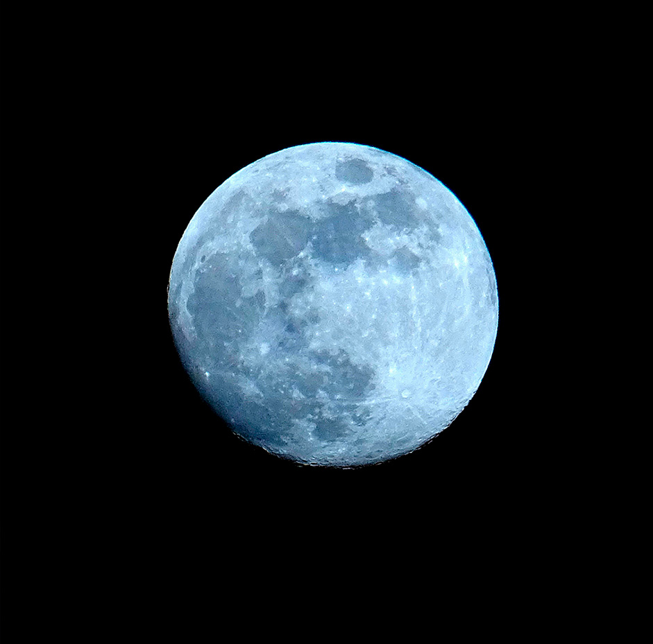

Experiencias bajo las estrellas
Aprendiendo de la luna
Descripción
Un viaje astronómico para descubrir la Luna en uno de los cielos más limpios del sureste español.
Dos días y una noche.
En esta experiencia, el destino estará centrado en la observación y el estudio de la Luna desde un
entorno científico y natural. El viaje se realizará en un observatorio astronómico situado en la
provincia de Alicante, en una zona elevada rodeada de parque natural, lejos de la contaminación
lumínica de las ciudades. El lugar está equipado con telescopios profesionales y espacios diseñados
para la divulgación astronómica.
Durante la experiencia se aprenderá a identificar las fases lunares, comprender su influencia en la Tierra, y observar en detalle su superficie: cráteres, mares lunares y relieves visibles a través de telescopios de alta precisión. También se explicará la relación histórica entre la Luna y la navegación, los calendarios antiguos y su importancia en distintas culturas.
Las sesiones nocturnas estarán guiadas por astrónomos especializados, combinando observación directa con explicaciones científicas y curiosidades sobre futuras misiones espaciales y exploración lunar.
Estadía en : alojamiento rural cercano al observatorio astronómico de la provincia de Alicante, ubicado en un entorno natural tranquilo con acceso rápido a zonas de observación nocturna.
Precio del viaje : 240 € por persona. Incluye transporte en tren ida y vuelta, una noche de alojamiento rural, desayuno, acceso al observatorio, uso de telescopios y actividades astronómicas centradas en la observación y estudio de la Luna.
Unico y primer mirador en Alicante
El Observatorio Astronómico de Alicante es un lugar de encuentro para aficionados y curiosos del universo, ofreciendo una ventana al cosmos repleta de estrellas, planetas y galaxias. Descubre mas en su Web: Astroturismoalicante.es
Itinerario
Día 1 - Llegada al observatorio y primer contacto lunar
Instalación en alojamiento rural y sesión introductoria · 15:00 - 20:30
La experiencia comienza con el viaje en tren hacia la provincia de Alicante y la llegada al alojamiento rural cercano al observatorio astronómico. Situado en un entorno natural tranquilo y elevado, este alojamiento permite un acceso rápido a las zonas de observación nocturna y ofrece el descanso ideal antes de la actividad principal.
Tras la instalación y el check-in, los viajeros dispondrán de tiempo libre para descansar, explorar el entorno natural o prepararse para la experiencia astronómica. Por la tarde se realizará una sesión introductoria en el observatorio, donde se explicará el funcionamiento de los telescopios y los objetivos de la observación lunar.

Día 1 - Noche - Observación de la Luna en el observatorio de Alicante
Estudio lunar con telescopios profesionales · 21:30 - 01:30
La noche está dedicada a la observación detallada de la Luna desde uno de los cielos más limpios del sureste español. En el Observatorio Astronómico de Alicante, los viajeros utilizarán telescopios profesionales para estudiar su superficie en profundidad.
Durante la sesión, astrónomos especializados guiarán la experiencia, explicando las fases lunares, los cráteres, los mares lunares y el relieve visible. También se abordará la importancia histórica de la Luna en la navegación, los calendarios antiguos y su papel en distintas culturas, además de curiosidades sobre la exploración espacial y futuras misiones lunares.
Día 2 - Ciencia lunar y regreso
Desayuno, cierre de experiencia y vuelta · 08:30 - 14:00
La mañana comienza con el desayuno en el alojamiento rural, rodeado de un entorno natural tranquilo. Posteriormente, los viajeros dispondrán de tiempo libre para descansar o disfrutar del paisaje antes del cierre del viaje.
Antes del regreso, se realizará una breve última actividad de repaso y cierre en el observatorio, consolidando los conocimientos adquiridos sobre la Luna y la observación astronómica.
Finalmente, se efectuará el traslado en tren de vuelta, finalizando una experiencia única de exploración lunar en la provincia de Alicante.


Nota importante: Los programas descritos son susceptibles de cambios por razones puntuales ajenas a nuestra organización, tales como condiciones meteorológicas o de seguridad.
Observaciones
- Si alguien tiene alergia o intolerancia a algún tipo de alimento deberá comunicarlo a la agencia para prever incidentes inesperados que cundan el panico.
- Si alguien tiene algún tipo de enfermedad que afecte a la respiración, resistencia o movimiento, deberá comunicarlo a la agencia para prever una mayor seguridad y adaptación.
- Si traen menores de edad o acompañan a personas con necesidades especiales, manténganse pendientes de ellos y no se separen en ningún momento. Recuerden presentárselos a los guías e informarles de todo lo necesario que deban tener en cuenta.
- Cualquier siniestro sucedido durante el viaje o emergencia médica será responsabilidad económica de la propia persona afectada. Los costes correrán por cuenta del viajero. Se le acompañará o transportará a la zona de asistencia médica más cercana y, si es posible, el grupo continuará su recorrido.Si el viajero se recupera a tiempo para el regreso, será reincorporado al viaje. En caso de que no sea posible, deberá ponerse en contacto con sus familiares, amigos u otras personas de confianza para poder regresar a su hogar cuando esté recuperado.
Gastos de anulación según fecha de salida
| HASTA | IMPORTE |
|---|---|
| Más de dos meses de anticipación | 0% |
| Un mes de anticipación | 40% |
| Una semana de anticipación | 80% |
| El dia del viaje | 100% |
Conforme más se acerque a la fecha de salida el importe que se le quitara a su viaje sera mayor.
El precio incluye
- Alojamiento completo
- Guía especializado
- Billete de avión
- Excursiones nocturnas
El precio no incluye
- Transporte interno
- Comidas y cenas
- Seguro opcional
- Gastos personales
Preguntas frecuentes
Aprende mas sobre tu viaje, no te pierdas nada.
El viaje incluye el transporte de ida y vuelta, pero no los transportes hurbanos, como buses entre otros, además de los traslados necesarios para realizar las actividades programadas de este viaje se pueden realizar a pie.
El observatorio está situado en una zona elevada del interior de Alicante, con muy baja contaminación lumínica. Esto permite una visión clara y estable de la Luna, ideal para observar detalles como cráteres, mares lunares y relieves con gran precisión.
Podrás observar la superficie lunar en detalle con telescopios profesionales, además de aprender a identificar sus fases, zonas más destacadas y características visibles desde la Tierra.
Sí. Si el cielo está nublado o hay malas condiciones meteorológicas, la observación puede verse afectada. En ese caso, se realizan actividades alternativas de divulgación astronómica dentro del observatorio.
Las temperaturas pueden bajar durante la noche, especialmente en zonas elevadas. Se recomienda llevar ropa de abrigo cómoda para poder disfrutar de la observación sin molestias.
Sí. El observatorio permite realizar fotografías con telescopios o con cámaras propias, y el personal puede orientar sobre cómo capturar la Luna de forma sencilla..